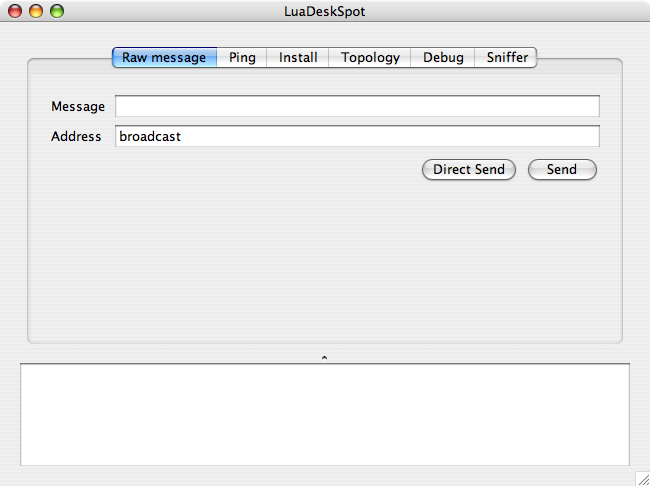
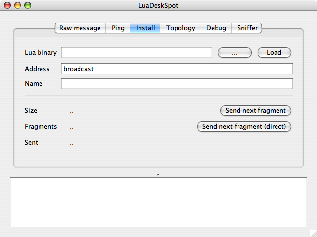

LuaDeskSpot is an example application that contains several modules that call services in the Lua SPOT. One of the module is the script installation module that will call installation service in the Lua SPOT. You can use this installation module to install new Lua scripts to the Lua SPOT.
You will need the Sun SPOT SDK and Java 5 in order to run this application.
To run LuaDeskSpot, go to the project directory and run ant host-run command. You also need to plug the Sun SPOT base station first before you can run this application.:
$ cd src/LuaDeskSpot
$ ant host-run
This module is used to send raw message to the Lua SPOT. The the message in the Message text box, specify the address in the Address text box, and click the Send or Direct Send button.
The Send button is used to send the message by calling the routing function in the Lua SPOTs. If you want to send a raw message without using the routing function, click the Direct Send button instead.
This module is used to call ping function of demo application that is pre-installed on the Lua SPOT. Any node that receive this message will send a response pong to the sender node. You can see the nodes that respond to the ping message using this module.
This module is used to install new script to the Lua SPOTs.
First, select your compiled script file by typing the path or clicking the ... button. Click the Load button after that to load the file into memory. You can also see the size and number of fragments that need to be sent.
After specifiying the destination address and the application name, you can start sending the install message (including the fragmented application binary) by clicking the Send Next Fragment button (or the direct send one). Do this multiple times until all fragments are sent.
The receiving Lua SPOT should turn on a LED when it receives and sucessfully installed the fragmented application. All LEDs will be turned on with blue color if the last segment is received.
This module can be used to get the network topology. It also call the demo application and tell the nodes to exchange messages so all nodes will know their neighbors. This neighbor information is sent back to the host so the host can know the overall topology. The topology graph will be drawn in the application.
This module shows debug messages that are sent by the Lua SPOT.
This module will show all messages that are received by the application.